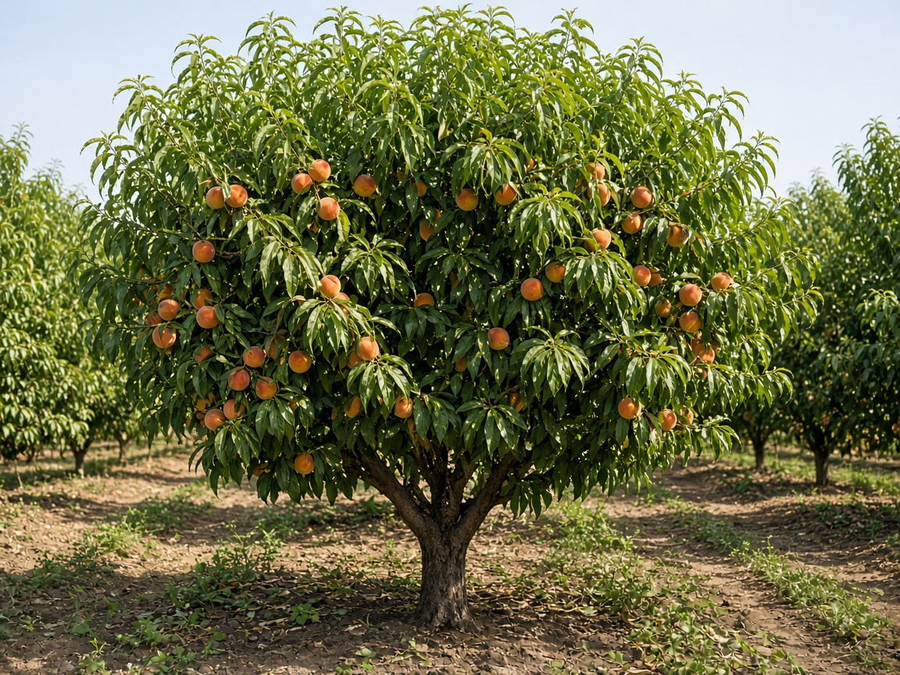

2023
SeedThe story starts small. Nursery seed lot tagged to Maya’s milestone; first photo from the farm bench.

Demo timeline
Planted for a first birthday at Willow Creek Farm · 18 miles away · Photos by the farm across years and seasons.
Mock data Multi-year monitoring — fruit tree highlight with seasonal education.
The story starts small. Nursery seed lot tagged to Maya’s milestone; first photo from the farm bench.
Little tree in the ground — staked, mulched, and labeled in the partner farm row.

Fully grown canopy. Farm photos track spring blossom through winter dormancy — and the optional harvest share.



Season collage — same tree, one view for sharing.